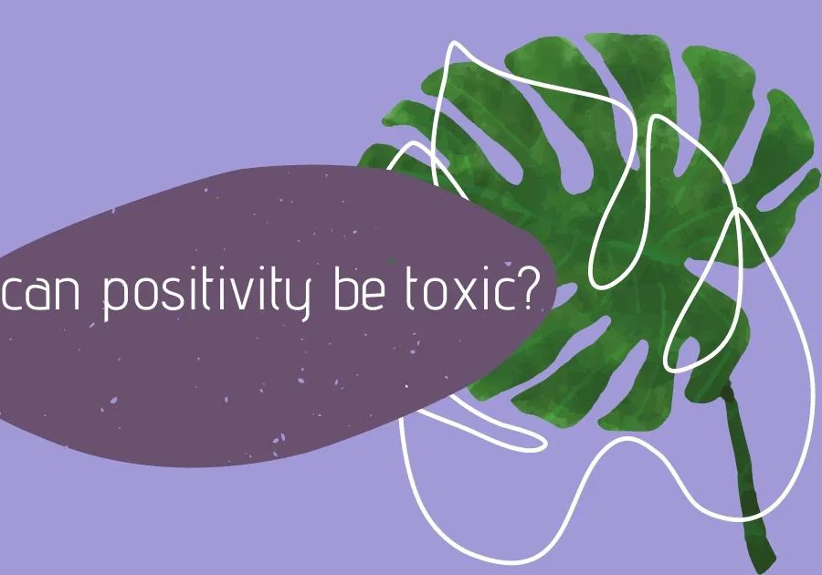

Toxic positivity and genuine optimism are often mistaken for one another, yet they represent two very different approaches to life’s challenges. Toxic positivity is the dismissal of negative emotions and experiences, pushing an overly positive outlook that denies the complexity of human emotions. It encourages people to "stay positive" no matter what, often invalidating real feelings and experiences in the process. Genuine optimism, on the other hand, is a balanced mindset that acknowledges hardships while maintaining hope and resilience. It allows space for emotions, both positive and negative, and encourages growth from adversity without forcing a false sense of happiness. Understanding the difference between these two can foster healthier emotional responses and lead to more authentic support systems.

While the idea of being positive may seem like a great philosophy, the truth is that it isn’t always the best approach. Imagine positivity as a narrative that aims to make you feel good and see the positive side of things. That sounds perfect. However, a strong approach criticizes this view and says that positivity can become toxic, as it is essentially a denial of acknowledging the facts of a difficult situation. Imagine, for example, whenever a problem arises, you try to deal with it by saying "everything will go well" but without getting into the process of examining the problem and finding possible solutions. Being positive seems to be morally good and acceptable, so an attempt to deal with emotions is categorized as negative. Toxic positivity can be a mask to hide your negative emotions in a mentally healthy way and, therefore, affect your mental health in a harmful way. It is possible to silence the human emotional experience if certain emotions are frustrated and suppressed. Reality has many obstacles, and it is perfectly human for me to be anxious and preoccupied with issues in our lives. Toxic positivity can lead to unrealistic expectations and, therefore, we cannot adjust to the actual situations. By pretending to see the positive aspect each time, we deny the validity of an authentic human experience, even if it is sometimes uncomfortable or distressing.
A solid antidote for toxic positivity from mental health professionals is called genuine optimism. In this case, the basic idea is to maintain a positive attitude without canceling and denying the whole emotional spectrum. Optimism is a more profound emotional state. It is about accepting and balancing the seemingly conflicting emotions we may feel in a difficult period. This acceptance releases the tension created when we do not recognize or want to avoid the feelings caused by a negative situation. In this way, our optimism becomes genuine and is not related to a false view of the situations in our lives. We treat the situation, that is, as it is, and let ourselves go through all the stages of its processing. Therefore, it turns out that the two words we use so often and in every context are entirely different from each other. Read on to find out the exact difference between toxic positivity and genuine optimism.
Genuine Optimism includes validation and support for yourself and others. It involves having an optimistic outlook on life and the world and being self-aware of the reality of life. Genuine Optimism has to do with feeling hopeful and confident about what the future holds, feeling that there is a good chance that what you want will happen, and not being disappointed if things do not turn out the way you want. Instead, learning and feeling that you always have something to gain when things are different from what you want them to be. In short, a way to be grateful for what is happening.
It is tough to introduce a new chapter in your life if you do not leave someone else behind. So, to move from toxic positivity to sincere optimism, you must learn to distinguish the characteristics of the two and make a healthy choice for yourself. As with many behavioral patterns, recognizing toxic positivity can be the first step in avoiding it. Self-observation is the key to awareness and subsequent transformation.
Time is a concept that is most often associated with a "must" and a rush. We often want to accelerate our growth and achieve the desired result as soon as possible. But we forgot that the concept of time is false and subjective. This means that it should not exist, but the emphasis should be that everyone has their own time to evolve and learn to get rid of a toxic pattern and live with new elements, healthier in terms of themselves, their life, and social relations. It is essential to give yourself time to experiment with the characteristics of sincere optimism and not to get to a point where it comes out as a natural way of being.
Do not be afraid to say that you do not feel well. Another critical step to getting closer to sincere optimism is not to be scared to experience negative emotions and express them. With that being said, you need to be honest with yourself first and then keep that honesty in your social relationships. In particular, when you feel bad about a situation, avoid trying to suppress that feeling and fooling yourself that everything is fine. Things are not "all right" for you now, and you have to respect that. Do you feel angry? Communicate with a person and break out in a healthy way, such as doing strenuous exercise. Do you feel sad? Let your tears flow and cancel your obligations for that day, giving space and time for your negative emotions to be experienced. Realizing and giving life to these negative emotions, the positive emotions that follow make more sense and make even the bad moments seem worthwhile.
After all, when you are faithful to your core and your true self, it is easier to have a truly optimistic outlook on life. This can work in both directions: when you are your true self, you have faith in yourself, and you can more easily believe and understand the human side of any condition that does not end up being perfect. On the other hand, being honestly optimistic can bring you closer to the elements that make up yourself and start learning and experimenting with you. For example, when you remain optimistic and say to yourself that "whatever the outcome, whether I pass the exam or not, I know that I gave my best and that I will try again," you learn for yourself that you have a lot more strength and perseverance within you than you thought you had.
A positive mindset creates the conditions that allow you to be optimistic. In conclusion, being genuinely optimistic has in it a positive mindset, which, in its turn, derives from allowing us to experience every feeling and having the belief that everything, in the end, is bearable. We have been trained to believe that having negative emotions is bad for us. We have been taught to suppress and bury our feelings rather than express them. What happens when we release the hold of those suppressed emotions? Do we feel better? Of course, we do! There’s also a downside to releasing our suppressed emotions: feeling the pain coming out of them. The truth is, when we allow ourselves to feel, we open up to pain. We open up to pain because we all have our vulnerable sides. As time passes, we become more receptive to feeling pain and come to the paradox of recognizing that pain is inevitable. Pain is the pathway to our freedom.